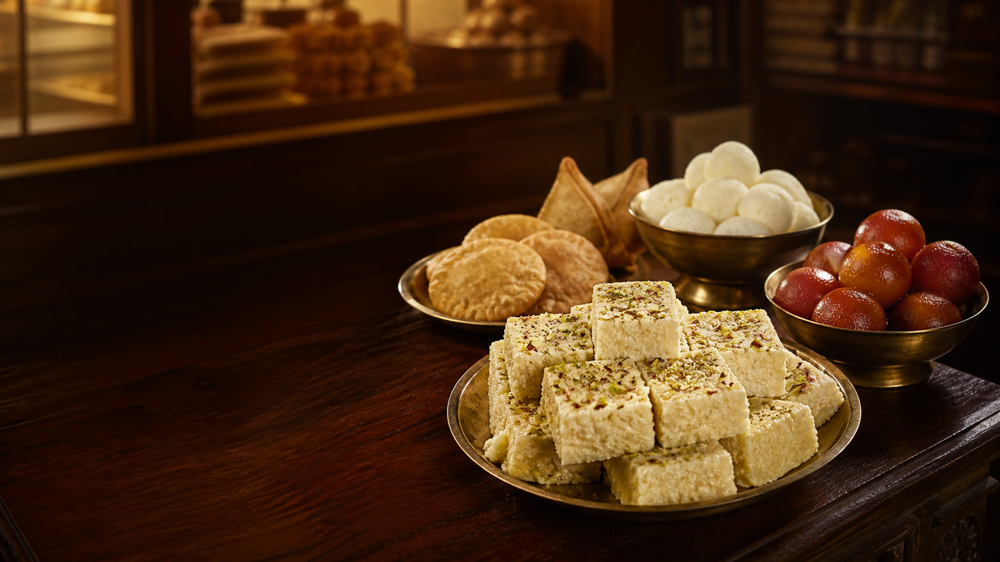

Signature Kalakand
Our heritage dairy star—rich, milky, and unmistakably authentic. A recipe loved since 1928.
Order Kalakand →
Guwahati’s sweet tradition
Authentic dairy sweets and fresh savouries from Pan Bazaar, proudly serving Assam since 1928.
A Guwahati institution
For nearly a century, The Gauhati Dairy has brought families together over rich, honest sweets. From our signature Kalakand to warm evening snacks, every bite is made for sharing.
Our favourites
Our heritage dairy star—rich, milky, and unmistakably authentic. A recipe loved since 1928.
Order Kalakand →Soft, spongy Rasgulla and indulgent Lal Mohan—the classics for celebrations, visits, and everyday joy.
Order classics →Golden Kachoris and Samosas, freshly prepared for the perfect tea-time break.
Order savouries →Celebrations, made sweeter
Tell us what you are celebrating, how many guests you have, and what you would like. We’ll help make it special.
Come by
“A little sweetness makes every moment feel like home.”
— The Gauhati Dairy